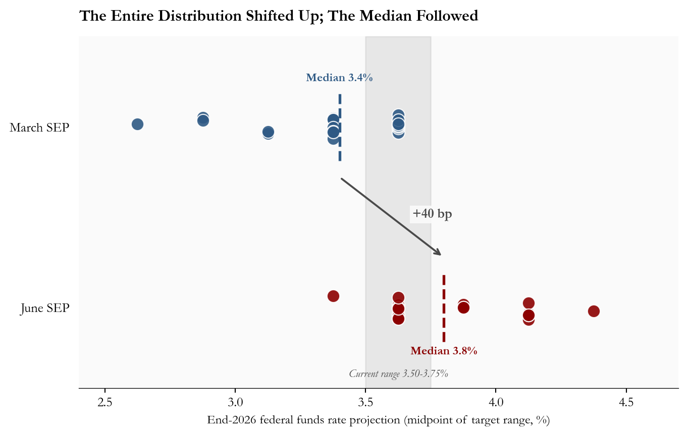
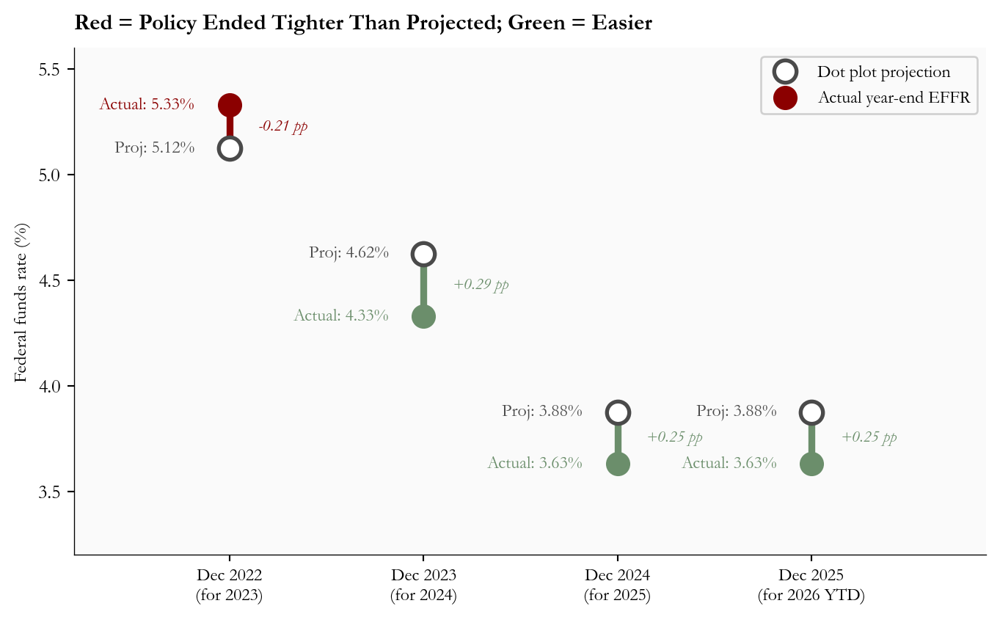
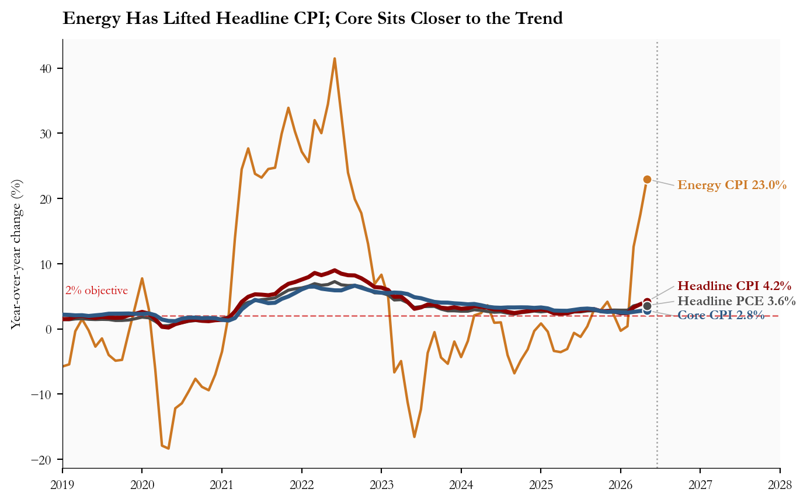
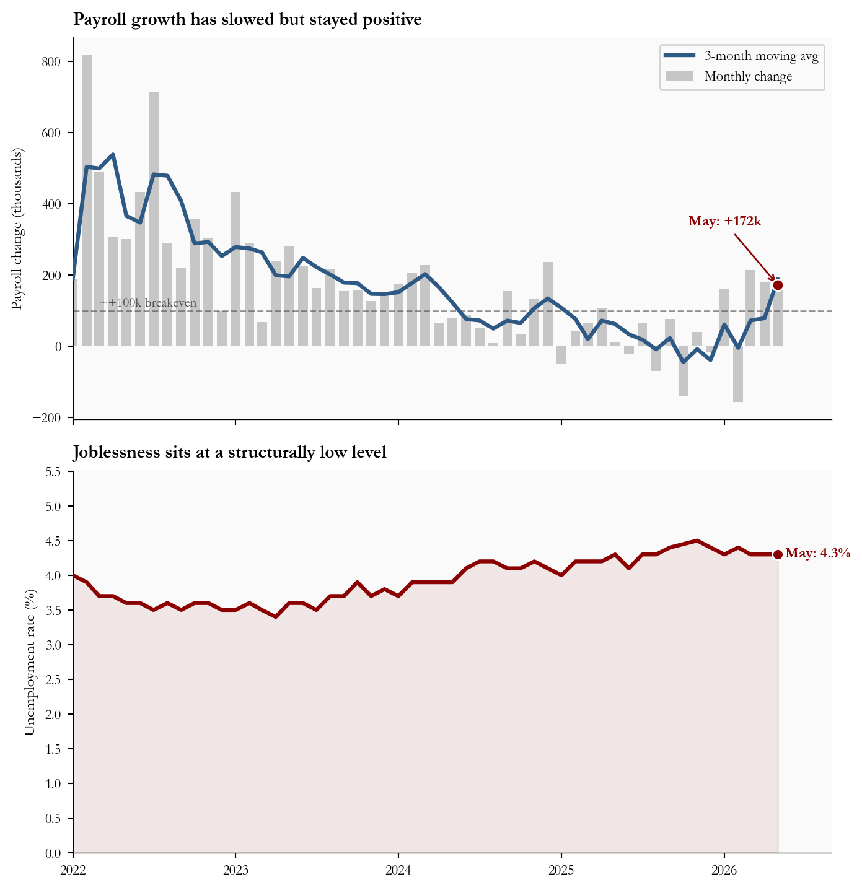
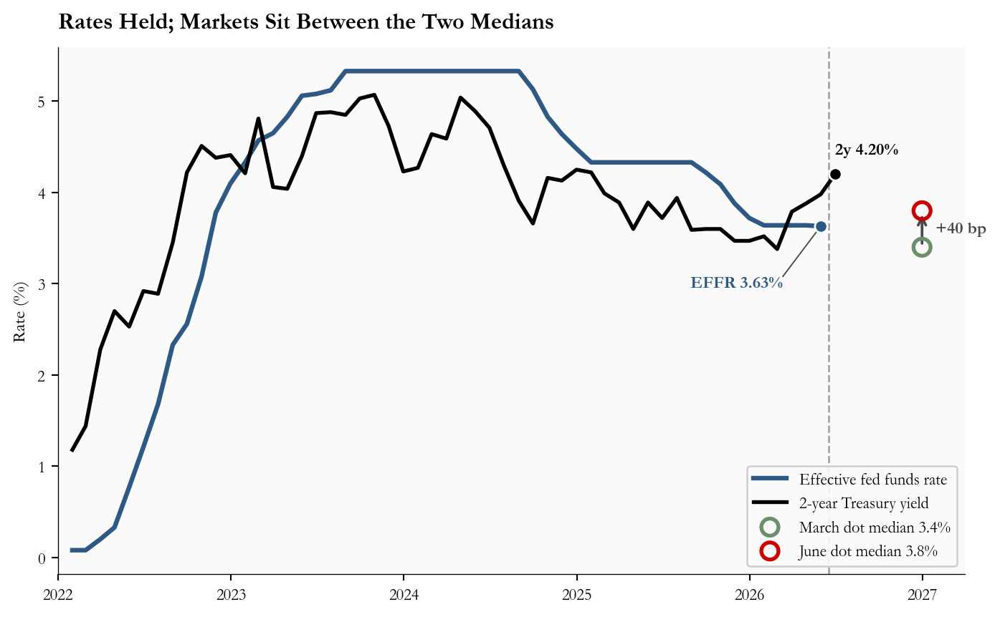

The June 2026 FOMC Dot Plot: A 40 Basis Point Hawkish Shift, With Rates on Hold
The June 17 FOMC held the federal funds rate at 3.50-3.75%, but the median end-2026 dot jumped 40 basis points to 3.8% and nine participants now project at least one hike. A read of the SEP, the data behind it, and the gap to market pricing.
economics
federal reserve
fomc
interest rates
inflation
labor market
Author
Yoram Gilboa
Published
June 20, 2026
3.8%
June dot, end-2026 (Mar: 3.4%)
3.50-3.75%
Target range (held)
3.63%
Effective fed funds rate
4.2%
May CPI YoY (core 2.8%)
172k
May payrolls (UR 4.3%)
Data as of June 19, 2026 | Sources: FOMC June 2026 SEP, BLS, FRED
The Federal Open Market Committee left the federal funds target range unchanged at 3.50-3.75% on June 17, but the path it projects for the next eighteen months moved sharply higher. The median end-2026 dot rose to 3.8% from 3.4% in March, a 40 basis point upward revision in a single Summary of Economic Projections cycle. Nine of the eighteen participants who submitted projections now see at least one rate hike before year-end. The 2026 PCE inflation projection climbed to 3.6% from 2.7%.
Incoming data tell a messier story underneath that hawkish revision. Headline CPI rose to 4.2% in May 2026, almost entirely on a 23.0% year-over-year jump in the energy index, while core CPI ran a cooler 2.8%. Payrolls added 172k, well above the 88k consensus, and unemployment held at 4.3%. The June meeting was the first to be presided over by a new Chair, and it was the first in this cycle to combine a hold with a clearly hawkish projection set. This post walks through what the dot plot changed, what the data underneath says, and where market pricing stands relative to the Committee’s revised path.
NoteNote on data
Official statistics in this post come from the Federal Reserve’s Summary of Economic Projections (SEP), FRED, the BLS, and CME FedWatch where noted. The June 17, 2026 SEP medians and dot distribution are taken from the Federal Reserve’s June 2026 projection materials; the March comparison is from the March 18, 2026 projection materials. Realized federal funds and Treasury yields are from FRED (FEDFUNDS, DGS1, DGS2, DGS10); inflation and labor numbers come from FRED’s redistribution of the BLS releases (CPIAUCSL, CPILFESL, CPIENGSL, PAYEMS, UNRATE). Market-implied policy paths are approximated from CME FedWatch and the 2-year Treasury yield. The June SEP shows 18 participant dots rather than the usual 19; the new Chair did not submit a projection for this cycle.
1. The Dot Plot Shifted: From One Cut to None, With Nine Voting for Tighter
The June SEP’s most important number is not the headline 3.8% median. It is the shape of the distribution behind it. In March, the projections clustered at two specific levels (a 25 basis point gap apart): the largest groups sat at the March median of 3.375% and just above it at 3.625%, with the lowest projection at 2.625%. In June, the entire distribution shifted up: the lowest dot is now 3.375%, which was the March median, and the upper tail extends to 4.375%, above any March projection. The current target-range midpoint of 3.62% is now at or below ten of the eighteen dots, meaning more than half the Committee sees either a hold or further tightening as the appropriate end-2026 stance.
The composition matters as much as the median. Of the eighteen participants who submitted, 9 project at least one 25 basis point hike, 8 project a hold at the current level, and just 1 projects a cut. That is a near-total inversion of the easing bias that defined the March projection set, and it broadcasts that the Committee’s center of gravity has moved toward higher for longer regardless of whether any specific hike is actually delivered.
Show code
# =============================================================================# FIGURE 1: DOT PLOT DISTRIBUTION COMPARISON# Goal: show the upward shift of the entire distribution, not just the median.# Each participant's projection is a dot; medians are dashed vertical lines;# the gray band marks the current target-range midpoint so readers can# instantly count how many dots sit above current policy.# =============================================================================# March 2026 SEP: 19 dots for end-2026 funds ratemarch_dots = ( [2.625] *1+ [2.875] *2+ [3.125] *2+ [3.375] *7+ [3.625] *7)# June 2026 SEP: 18 dots (Chair did not submit)june_dots = ( [3.375] *1+ [3.625] *8+ [3.875] *3+ [4.125] *5+ [4.375] *1)march_med = stats["march_sep_funds_eoy2026"]june_med = stats["june_sep_funds_eoy2026"]target_mid = stats["current_target_mid"]fig, ax = plt.subplots(figsize=(7.2, 4.6))# Vertical band marking the current target-range midpoint.ax.axvspan(3.50, 3.75, color=COLORS["light"], alpha=0.25, zorder=1)ax.text(3.625, -0.31, f"Current range {stats['current_rate_range']}%", ha="center", va="bottom", fontsize=8, color=COLORS["neutral"], style="italic")# Jittered scatter for each meeting's distribution.rng = np.random.default_rng(7)march_y =0.95+ rng.uniform(-0.06, 0.06, size=len(march_dots))june_y =0.05+ rng.uniform(-0.06, 0.06, size=len(june_dots))ax.scatter(march_dots, march_y, s=90, color=COLORS["primary"], edgecolors="white", linewidth=0.8, alpha=0.9, zorder=3, label=f"March 2026 (n={len(march_dots)})")ax.scatter(june_dots, june_y, s=90, color=COLORS["accent"], edgecolors="white", linewidth=0.8, alpha=0.9, zorder=3, label=f"June 2026 (n={len(june_dots)})")# Median markers as dashed vertical lines spanning each row.ax.plot([march_med, march_med], [0.78, 1.12], linestyle="--", color=COLORS["primary"], linewidth=2, zorder=4)ax.plot([june_med, june_med], [-0.12, 0.22], linestyle="--", color=COLORS["accent"], linewidth=2, zorder=4)# Median labels positioned directly above each dashed line.ax.text(march_med, 1.18, f"Median {fmt(march_med)}%", ha="center", fontsize=9, color=COLORS["primary"], fontweight="bold")ax.text(june_med, -0.18, f"Median {fmt(june_med)}%", ha="center", fontsize=9, color=COLORS["accent"], fontweight="bold")# Connector arrow showing the +40bp median shift between rows.ax.annotate("", xy=(june_med, 0.30), xytext=(march_med, 0.70), arrowprops=dict(arrowstyle="->", color=COLORS["neutral"], lw=1.4, connectionstyle="arc3,rad=0.0"))ax.text((march_med + june_med) /2+0.08, 0.5,f"+{stats['funds_shift_bp_2026']} bp", fontsize=10, color=COLORS["neutral"], fontweight="bold", bbox=dict(facecolor="#fafafa", edgecolor="none", pad=2, alpha=0.9))# Row labels on the left axis.ax.set_yticks([0.05, 0.95])ax.set_yticklabels(["June SEP", "March SEP"], fontsize=10)ax.set_ylim(-0.35, 1.40)ax.set_xlim(2.4, 4.7)ax.set_xlabel("End-2026 federal funds rate projection (midpoint of target range, %)", fontsize=9.5)ax.set_title("The Entire Distribution Shifted Up; The Median Followed", fontsize=12, fontweight="bold", loc="left", pad=12)# Hide the y-axis spine; the row labels alone are enough.ax.spines["left"].set_visible(False)ax.tick_params(left=False)plt.tight_layout()fig.savefig(IMG_DIR /"june-2026-dot-plot-shift.png", dpi=150, bbox_inches="tight")

Figure 1: March vs June 2026 SEP dot distributions for the end-2026 federal funds rate. Each marker represents one participant; horizontal jitter is for visibility only. The dashed lines are the medians, and the gray band marks the current target-range midpoint. Source: FOMC June 2026 and March 2026 Summary of Economic Projections.
2. What Is the Dot Plot, and How Reliable Is It?
The dot plot is a chart attached to the FOMC’s quarterly Summary of Economic Projections. Each participant places one anonymous dot at the level where they think the federal funds rate should be at the end of each of the next three years, given their own view of the economy and what they think appropriate policy is. The median dot is the official summary statistic. Crucially, the dot plot is a record of forecasts, not commitments: it shows where each participant thinks rates should land if the economic outlook plays out the way they currently expect it to.
That distinction matters when looking at a year of forecast misses. The Federal Reserve’s SEP guide is careful to describe the dots as conditional projections, and the historical record shows why. Figure 2 plots the gap between the median December-meeting dot for the following year and the actual year-end effective federal funds rate. The 2021 miss is excluded because including it compresses the rest of the chart to invisibility: that December, the median dot saw the policy rate near zero at the end of 2022, just before the fastest tightening cycle in four decades. Setting that episode aside, recent misses run in both directions and average roughly one quarter of a percentage point per year.
Show code
# =============================================================================# FIGURE 2: HISTORICAL FORECAST ACCURACY OF THE DOT PLOT# Dumbbell chart: for each prior December SEP, draw a line connecting the# median dot for the next year-end to the rate that actually arrived.# Color = direction of the miss.# =============================================================================hist = pd.DataFrame({"label": ["Dec 2022\n(for 2023)", "Dec 2023\n(for 2024)","Dec 2024\n(for 2025)", "Dec 2025\n(for 2026 YTD)"],"dot_median": [5.125, 4.625,3.875, 3.875],"actual_effr": [5.33, 4.33,3.63, 3.63],})hist["error"] = hist["dot_median"] - hist["actual_effr"]fig, ax = plt.subplots(figsize=(7.2, 4.5))for i, row in hist.iterrows(): proj, actual = row["dot_median"], row["actual_effr"] err = row["error"] color = COLORS["accent"] if err <0else COLORS["secondary"] miss_text =f"{err:+.2f} pp" ax.vlines(i, min(proj, actual), max(proj, actual), colors=color, linewidth=3.5, zorder=2)# Hollow circle for the projection ax.scatter(i, proj, s=130, zorder=4, facecolors="white", edgecolors=COLORS["neutral"], linewidths=2, label="Dot plot projection"if i ==0else"")# Filled circle for the realized level ax.scatter(i, actual, s=130, zorder=4, color=color, label="Actual year-end EFFR"if i ==0else"") ax.text(i -0.18, proj, f"Proj: {proj:.2f}%", ha="right", va="center", fontsize=9, color=COLORS["neutral"]) ax.text(i -0.18, actual, f"Actual: {actual:.2f}%", ha="right", va="center", fontsize=9, color=color) ax.text(i +0.15, (proj + actual) /2, miss_text, ha="left", va="center", fontsize=8.5, color=color, style="italic")ax.set_xticks(range(len(hist)))ax.set_xticklabels(hist["label"], fontsize=9)ax.set_ylabel("Federal funds rate (%)", fontsize=9.5)ax.set_xlim(-0.8, len(hist) -0.1)ax.set_ylim(3.2, 5.6)ax.set_title("Red = Policy Ended Tighter Than Projected; Green = Easier", fontsize=11.5, fontweight="bold", loc="left", pad=10)ax.legend(fontsize=9, loc="upper right", framealpha=0.9)plt.tight_layout()

Figure 2: December dot plot median vs realized year-end effective federal funds rate, 2022 through 2025. Each vertical connector marks one projection cycle; the marker color identifies the direction of the miss. Source: FOMC SEP archives and FRED FEDFUNDS.
The historical pattern argues for reading the June dot plot as a central case, not a forecast that will be delivered point-for-point. The 2024 and 2025 misses each landed about a quarter percent below the prior December median, in the direction of more easing than projected. Those numbers do not invalidate the June hawkish shift, but they do say that a 3.8% end-2026 median is consistent with realized policy anywhere from roughly 3.52% to 4.08% on one standard deviation of recent error. The signal of the shift is real; the level should be scenario-weighted.
3. The Inflation Backdrop: Energy Drives Headline, Core Cools
The data the Committee was responding to is split. Energy did almost all of the work in May 2026: the CPI energy index rose +3.9% month-over-month and now sits 23.0% above its level twelve months earlier. That pushed headline CPI to 4.2% year-over-year. Core CPI, by contrast, eased to 2.8%, with monthly momentum back near the run rate of the first quarter.
The Committee’s challenge is reading that split. The June SEP raised the 2026 PCE projection by 0.9 percentage points and core PCE by 0.6 points, which says participants now expect the energy impulse to bleed into broader prices even if core has not yet moved. Figure 3 plots the four series alongside the 2 percent objective so the divergence is visible.
Show code
# =============================================================================# FIGURE 3: INFLATION COMPONENTS YOY# Direct end-of-line labels are used instead of a legend so the eye goes# straight from the latest value to the series identity.# =============================================================================start ="2019-01-01"series_set = [ ("Energy CPI", "energy_cpi_yoy", COLORS["warning"], 1.6), ("Headline CPI", "headline_cpi_yoy", COLORS["accent"], 2.6), ("Core CPI", "core_cpi_yoy", COLORS["primary"], 2.6), ("Headline PCE", "headline_pce_yoy", COLORS["neutral"], 2.0),]fig, ax = plt.subplots(figsize=(7.4, 4.6))# First pass: draw lines and endpoint dots, collect the actual end values.endpoints = []for label, col, color, lw in series_set: s = infl[col].loc[start:].dropna() ax.plot(s.index, s.values, color=color, linewidth=lw, zorder=3if lw >2else2) last_x = s.index[-1] last_y =float(s.iloc[-1]) ax.scatter(last_x, last_y, s=36, color=color, edgecolors="white", linewidth=0.8, zorder=5) endpoints.append((label, last_x, last_y, color))# Second pass: stack labels in a column to the right of the data so they# never sit on top of the lines. Each label is connected to its endpoint by# a thin gray leader line. Stacking order follows the sort of the values.endpoints_sorted =sorted(endpoints, key=lambda r: r[2], reverse=True)# Slot positions are a fixed evenly-spaced column anchored to the right# margin. Spacing in data units; tweak if more series are added.label_x = pd.Timestamp("2026-09-01")y_slots = [22.0, 6.5, 4.2, 2.0]for slot_y, (label, last_x, last_y, color) inzip(y_slots, endpoints_sorted): ax.plot([last_x, label_x], [last_y, slot_y], color=COLORS["light"], linewidth=0.6, zorder=2) ax.text(label_x, slot_y, f" {label}{last_y:.1f}%", color=color, fontsize=9, fontweight="bold", va="center")# 2% reference line.ax.axhline(2.0, color=COLORS["fed_target"], linestyle="--", linewidth=1, alpha=0.6)ax.text(pd.Timestamp("2019-01-15"), 5.5, "2% objective", fontsize=8, color=COLORS["fed_target"])# June 17 FOMC marker.fomc = pd.Timestamp("2026-06-17")ax.axvline(fomc, color=COLORS["neutral"], linestyle=":", linewidth=1, alpha=0.5)# Extend x-axis to make room for the right-margin label column.ax.set_xlim(pd.Timestamp(start), pd.Timestamp("2028-01-01"))ax.set_ylabel("Year-over-year change (%)", fontsize=9.5)ax.xaxis.set_major_locator(mdates.YearLocator())ax.xaxis.set_major_formatter(mdates.DateFormatter("%Y"))ax.tick_params(labelsize=8.5)ax.set_title("Energy Has Lifted Headline CPI; Core Sits Closer to the Trend", fontsize=12, fontweight="bold", loc="left", pad=10)plt.tight_layout()

Figure 3: Headline CPI, core CPI, headline PCE, and CPI energy index, year-over-year, 2019 through May 2026. The 2% horizontal reference is the FOMC’s longer-run inflation objective; the dashed vertical line marks the June 17 FOMC meeting. Source: FRED CPIAUCSL, CPILFESL, PCEPI, CPIENGSL.
The policy reading is straightforward. If the energy impulse fades cleanly over the next two CPI prints, the median June dot of 3.8% will look conservative and the hawkish shift will recede. If energy starts to bleed into services prices, June was the floor on hawkishness, not the peak.
4. The Labor Market Removes the Pressure to Ease
Labor data give the Committee room to wait. Payrolls added 172k in May, roughly double the 88k consensus, and April was revised up to 179k. The unemployment rate held at 4.3%, and the labor force participation rate sat at 61.8%. Initial unemployment claims, which would be the first place a slowing labor market shows up, have drifted but not in a way that signals near-term deterioration.
Show code
# =============================================================================# FIGURE 4: LABOR DASHBOARD (2 PANELS, STACKED VERTICALLY)# Stacked vertically so each panel uses the full content width and the time# axis lines up between them, making it easy to read across at any month.# Top: monthly payroll change with a smoothed trend line.# Bottom: unemployment rate over the same window, axis starts at 0%.# =============================================================================start ="2022-01-01"pc = labor["payroll_change_k"].loc[start:].dropna()ur = labor["unrate"].loc[start:].dropna()pc_smooth = pc.rolling(3, min_periods=1).mean()fig, (axT, axB) = plt.subplots(2, 1, figsize=(7.4, 7.6), sharex=True)# --- Top: payrolls ---axT.bar(pc.index, pc.values, width=22, color=COLORS["light"], alpha=0.7, label="Monthly change")axT.plot(pc_smooth.index, pc_smooth.values, color=COLORS["primary"], linewidth=2.4, label="3-month moving avg", zorder=3)# Breakeven referenceaxT.axhline(100, color=COLORS["neutral"], linestyle="--", linewidth=1, alpha=0.6)axT.text(pd.Timestamp("2022-03-01"), 112, "~+100k breakeven", fontsize=8, color=COLORS["neutral"])# Annotate May 2026may_val =float(pc.iloc[-1])axT.scatter(pc.index[-1], may_val, s=48, color=COLORS["accent"], edgecolors="white", linewidth=1, zorder=5)axT.annotate(f"May: +{stats['may_payrolls_k']}k", xy=(pc.index[-1], may_val), xytext=(-10, 36), textcoords="offset points", fontsize=9, color=COLORS["accent"], fontweight="bold", ha="right", arrowprops=dict(arrowstyle="->", color=COLORS["accent"], lw=1))axT.set_ylabel("Payroll change (thousands)", fontsize=9.5)axT.set_title("Payroll growth has slowed but stayed positive", fontsize=11, fontweight="bold", loc="left", pad=8)axT.tick_params(labelsize=8.5)axT.legend(fontsize=8.5, loc="upper right", framealpha=0.9)# --- Bottom: unemployment rate ---# y-axis starts at 0 (per request) so the level is read against zero rather# than against the chart's own minimum, which can exaggerate small moves.axB.plot(ur.index, ur.values, color=COLORS["accent"], linewidth=2.4, zorder=3)axB.fill_between(ur.index, ur.values, 0, color=COLORS["accent"], alpha=0.08, zorder=1)# Endpoint dot and labellast_ur =float(ur.iloc[-1])axB.scatter(ur.index[-1], last_ur, s=44, color=COLORS["accent"], edgecolors="white", linewidth=1, zorder=5)axB.text(ur.index[-1], last_ur,f" May: {stats['may_unrate']}%", color=COLORS["accent"], fontsize=9, fontweight="bold", va="center")# Extend x-axis for the labelaxB.set_xlim(ur.index[0], ur.index[-1] + pd.Timedelta(days=120))# Start at 0 with 0.5% tick spacing and one decimal place on labels.axB.set_ylim(0, 5.5)axB.yaxis.set_major_locator(ticker.MultipleLocator(0.5))axB.yaxis.set_major_formatter(ticker.FormatStrFormatter("%.1f"))axB.set_ylabel("Unemployment rate (%)", fontsize=9.5)axB.set_title("Joblessness sits at a structurally low level", fontsize=11, fontweight="bold", loc="left", pad=8)axB.xaxis.set_major_locator(mdates.YearLocator())axB.xaxis.set_major_formatter(mdates.DateFormatter("%Y"))axB.tick_params(labelsize=8.5)plt.tight_layout()

Figure 4: Monthly nonfarm payroll change (3-month moving average overlaid) and the civilian unemployment rate, January 2022 through May 2026. The dashed reference at +100k on the left panel marks a commonly cited breakeven for labor force growth. Source: FRED PAYEMS, UNRATE.
That data set is the practical justification for a hawkish dot plot with a held funds rate. Inflation persistence risk, not labor weakness, is the constraint. Until either core inflation prints clearly stall or unemployment moves materially higher, the Committee has political cover to keep the option of tightening alive in projections without spending the political capital to actually deliver a hike.
5. Markets Believe Part of the Story, Not All of It
So far this post has looked at what the Fed expects. The other half of the story is what financial markets expect. The two are not the same, and the gap between them is one of the most useful signals investors can read.
Quick definitions before the chart. The Summary of Economic Projections (SEP) is the quarterly forecast document the Fed releases alongside four of its eight annual meetings; the dot plot from Section 1 is one page of that document. The 2-year Treasury yield is the interest rate the US government pays to borrow money for two years; because it covers the same window the Fed forecasts, it acts as a market vote on where short-term interest rates are likely headed.
If investors thought the Fed’s June projection of 3.8% by end-2026 was exactly right, the 2-year Treasury yield would line up with that path. If investors thought the Fed would deliver less of the hike than it projects, the 2-year would settle below the June dot. Figure 5 plots the actual fed funds rate the Fed has set, the 2-year Treasury yield as a market proxy, and the March and June dot medians as diamonds at the end of 2026.
Show code
# =============================================================================# FIGURE 5: MARKET POLICY PROXY vs DOT PLOT MEDIANS# A clean line chart of the policy rate and the 2y yield, with two diamond# markers at end-2026 showing where the March and June medians sit and a# vertical line marking the meeting.# =============================================================================start ="2022-01-01"ff = rates_m["fedfunds"].loc[start:].dropna()y2 = rates_m["dgs2"].loc[start:].dropna()fig, ax = plt.subplots(figsize=(7.4, 4.6))ax.plot(ff.index, ff.values, color=COLORS["primary"], linewidth=2.4, label="Effective fed funds rate", zorder=3)ax.plot(y2.index, y2.values, color="#000000", linewidth=2.0, label="2-year Treasury yield", zorder=3)# Endpoint labels (direct, not in legend).# EFFR label sits down and to the left of its endpoint, connected back to# the dot by a thin black leader so the label cannot be confused with the# March/June markers that sit to the right at end-2026.ax.scatter(ff.index[-1], ff.iloc[-1], s=42, color=COLORS["primary"], edgecolors="white", linewidth=1, zorder=5)effr_label_x = ff.index[-1] - pd.Timedelta(days=80)effr_label_y = ff.iloc[-1] -0.55ax.plot([ff.index[-1], effr_label_x], [ff.iloc[-1], effr_label_y], color="#000000", linewidth=0.7, alpha=0.7, zorder=4)ax.text(effr_label_x, effr_label_y, f"EFFR {ff.iloc[-1]:.2f}%", color=COLORS["primary"], fontsize=9, fontweight="bold", ha="right", va="top")ax.scatter(y2.index[-1], y2.iloc[-1], s=42, color="#000000", edgecolors="white", linewidth=1, zorder=5)ax.text(y2.index[-1], y2.iloc[-1] +0.18, f"2y {y2.iloc[-1]:.2f}%", color="#000000", fontsize=9, fontweight="bold", va="bottom")# Dot plot medians as hollow circles at end-2026 (smaller, no fill).# Green for the (dovish) March median, red for the (hawkish) June median.eoy = pd.Timestamp("2026-12-31")ax.scatter([eoy], [stats["march_sep_funds_eoy2026"]], marker="o", s=80, facecolors="none", edgecolors=COLORS["secondary"], linewidth=2.0, zorder=6, label=f"March dot median {stats['march_sep_funds_eoy2026']:.1f}%")ax.scatter([eoy], [stats["june_sep_funds_eoy2026"]], marker="o", s=80, facecolors="none", edgecolors=COLORS["fed_target"], linewidth=2.0, zorder=6, label=f"June dot median {stats['june_sep_funds_eoy2026']:.1f}%")# Connector arrow between the two mediansax.annotate("", xy=(eoy, stats["june_sep_funds_eoy2026"]), xytext=(eoy, stats["march_sep_funds_eoy2026"]), arrowprops=dict(arrowstyle="->", color=COLORS["neutral"], lw=1.4))ax.text(eoy + pd.Timedelta(days=20), (stats["march_sep_funds_eoy2026"] + stats["june_sep_funds_eoy2026"]) /2,f" +{stats['funds_shift_bp_2026']} bp", fontsize=9, color=COLORS["neutral"], fontweight="bold", va="center")# June FOMC verticalfomc = pd.Timestamp("2026-06-17")ax.axvline(fomc, color=COLORS["neutral"], linestyle="--", linewidth=1, alpha=0.5)ax.set_ylabel("Rate (%)", fontsize=9.5)ax.set_xlim(pd.Timestamp(start), pd.Timestamp("2027-04-01"))ax.xaxis.set_major_locator(mdates.YearLocator())ax.xaxis.set_major_formatter(mdates.DateFormatter("%Y"))ax.tick_params(labelsize=8.5)ax.set_title("Rates Held; Markets Sit Between the Two Medians", fontsize=12, fontweight="bold", loc="left", pad=10)ax.legend(fontsize=8.5, loc="lower right", framealpha=0.9)plt.tight_layout()

Figure 5: Effective federal funds rate and 2-year Treasury yield (a market proxy for the expected policy path) from January 2022, with the March and June 2026 SEP medians for end-2026 plotted as diamonds. The June 17 FOMC date is marked. Source: FRED FEDFUNDS, DGS2; FOMC March 2026 and June 2026 SEP.
The current 2-year Treasury yield of 4.20% is well above the June dot median, but that comparison is misleading on its own: the 2-year is an average over the next two years, while the dot is one specific point at the end of 2026. A cleaner read comes from fed funds futures, which translate market trading directly into an expected end-2026 rate. That implied rate is around 3.7%, roughly 10 basis points below the Fed’s new median dot. The translation in plain English: markets believe the Fed has moved hawkish, but they do not yet believe it will deliver every step of the new projected path.
One more market gauge worth a glance: the gap between the 10-year and 2-year Treasury yields, called the 2s10s spread. When this spread is large and positive, markets are betting on a normally functioning economy with steady growth ahead. When it is small or negative, markets are signaling caution about the future. Today it sits at 29 basis points, which is positive but flat, the bond-market equivalent of a shrug.
6. What It Means
For the Federal Reserve: This is a credibility play. Holding rates while raising the projected path is the smallest hawkish action the Committee can take. It preserves the option to hike if the energy shock bleeds into core, and it preserves the option to cut if it does not, without committing to either. The cost is communications fragility: the next CPI print, due in early July, now carries an outsized read on whether the dots get delivered or quietly walked back in September.
For consumers: Borrowing costs are stable for now. Mortgage rates, auto loan rates, and variable credit card rates all track the front end of the curve, which has not moved meaningfully. The practical timeline for lower consumer borrowing costs is now visibly longer than it was three months ago.
For equity markets: The hawkish dot plot raises the bar for rate-sensitive sectors, particularly utilities, REITs, and long-duration growth stocks. Earnings stay the load-bearing variable: as long as labor income holds up, equity markets can absorb a higher-for-longer path; if labor cools meaningfully, the higher path is harder to sustain.
For bond investors: Short-term Treasury yields are more likely to drift higher than lower until the next two CPI reports show that core inflation is heading back toward 2%. Longer-dated Treasuries are stuck between two competing forces: a hawkish Fed keeping front-end yields up, and softer growth expectations keeping long-end yields anchored. The 2s10s spread is flat as a result. The cleanest setup for falling yields is a quiet July and August on inflation; the cleanest setup for rising yields is any sign that the energy shock is bleeding into core services prices.
Limitations
The June 2026 SEP shows 18 dots rather than 19; the new Chair did not submit a projection for this cycle. The published medians are computed on 18.
Market-implied paths are approximated using fed funds futures and the 2-year Treasury yield. Exact rate probabilities should be cross-checked against CME FedWatch or a Bloomberg snapshot.
The historical SEP error figures use Dec-meeting medians vs Dec-average effective fed funds and exclude the December 2021 outlier.
7. Conclusion
The June meeting did one thing on the funds rate and a different thing on the projected path. Rates stayed at 3.50-3.75%; the median end-2026 dot rose 40 basis points to 3.8%, the 2026 PCE projection rose 0.9 points to 3.6%, and nine of eighteen participants now see at least one hike before year-end. The data behind that shift is split: headline inflation is hot, core is not yet, and the labor market gives the Committee no urgency to ease. Markets sit a few basis points below the new dots, willing to entertain the higher path but not yet committed to it. The next two CPI prints, the July meeting projections, and any further energy passthrough will decide whether June’s hawkish revision becomes a floor or a peak.